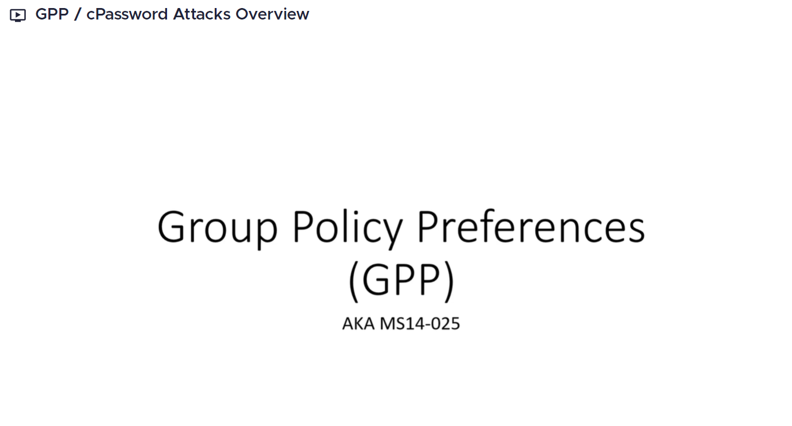

As i have started the lab after so long that the IP address of every machine was changed to keep that in mind.


A patch was released but it does not prevent previous issues:
if an admin has stored a group policy preference embedded credential before the patch was implemented then this will still display a credential to us.
This is not going to come up that often but it is still something that you should be checking for cuz there are lot of server 2012 machines out there.